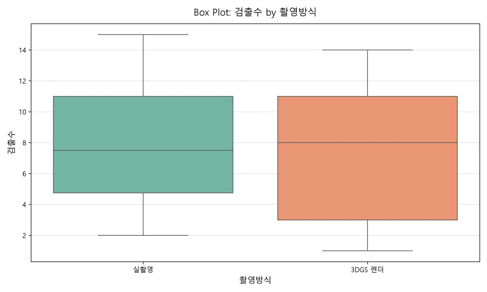
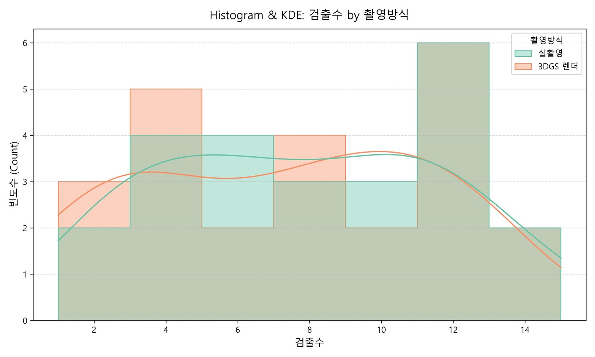
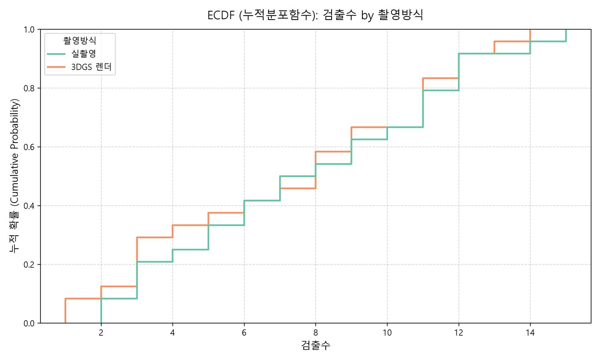

실행 한 번, 차트 세 장
$ python main.py
CSV 파일 자동 선택: field2scene_detection.csv
데이터 로드 완료! (총 48행, 4열)
[클래스(그룹/범주형)로 사용할 컬럼을 선택하세요]
1. view 2. 촬영방식 3. 검출수 4. 평균신뢰도
번호를 입력하세요 (1~4): 2
[피처(수치형 데이터)로 사용할 컬럼을 선택하세요]
번호를 입력하세요 (1~4): 3
[생성할 그래프 종류를 선택하세요]
1. 박스플롯 2. 히스토그램 3. ECDF 4. 전체 한 번에 생성
번호를 입력하세요 (1~4): 4
[그래프 생성 및 저장 시작]
-> [박스플롯 저장 완료] boxplot_촬영방식_검출수.jpg
-> [히스토그램 저장 완료] histogram_촬영방식_검출수.jpg
-> [ECDF 플롯 저장 완료] ecdf_촬영방식_검출수.jpg


세 장 모두 "차이 없다"고 말한다 — 그런데 틀렸다
박스플롯도, 히스토그램도, ECDF도 두 그룹이 거의 같다고 보여줍니다. 여기서 멈추면 "3DGS 렌더는 실촬영과 검출 수가 비슷하다"가 결론입니다.
그런데 이 데이터는 같은 카메라 pose를 두 방식으로 찍은 24쌍입니다. 위 세 그림은 전부 두 그룹을 독립 표본으로 취급해 주변분포만 비교하므로, 어느 view가 어느 view와 짝인지를 통째로 버립니다.
짝을 살려서 다시 세어보면 그림이 달라집니다.
| 보는 방식 | 결과 | 결론 |
|---|---|---|
| 주변분포 (위 3장) | 중앙값 7.5 vs 8.0 | 차이 없어 보임 |
| 쌍별 비교 | 렌더가 적음 11 / 같음 12 / 많음 1 | 24쌍 중 23쌍에서 같거나 적음 |
| Wilcoxon 부호순위 | p = 0.0049 | 체계적 손실 (유의) |
렌더가 더 많이 찾은 view는 24개 중 단 1개입니다. 방향이 한쪽으로 쏠려 있으니 우연으로 보기 어렵습니다. 평균이 비슷한 것과 차이가 없는 것은 다릅니다.
→ 쌍 비교 전체 분석은 검출 갭 분석 케이스에서 인터랙티브하게 볼 수 있습니다.
코드에서 신경 쓴 것
1. 한글 CSV 인코딩 자동 감지
한국에서 엑셀로 저장한 CSV는 UTF-8이 아니라 CP949입니다. 매번 UnicodeDecodeError를 만나는 대신 후보를 순서대로 시도합니다. 이 페이지의 입력 CSV도 일부러 CP949로 저장해 이 경로를 실제로 태웠습니다.
def load_csv_with_encoding(file_path):
for enc in ['utf-8', 'cp949', 'euc-kr', 'utf-8-sig']:
try:
return pd.read_csv(file_path, encoding=enc)
except (UnicodeDecodeError, LookupError):
continue
raise ValueError(f"지원하는 인코딩으로 {file_path} 파일을 열 수 없습니다.")2. seaborn이 없어도 죽지 않게
seaborn은 있으면 쓰고, 없으면 matplotlib으로 같은 그림을 그립니다. 남의 환경에서 ModuleNotFoundError로 멈추지 않는 게 도구의 기본이라고 봤습니다.
try:
import seaborn as sns
HAS_SEABORN = True
except ImportError:
HAS_SEABORN = False
# ... 그리는 쪽에서
if HAS_SEABORN:
sns.boxplot(data=plot_data, x=class_col, y=feature_col, palette='Set2')
else:
grouped = [g[feature_col].values for _, g in plot_data.groupby(class_col)]
box = plt.boxplot(grouped, labels=[...], patch_artist=True, showmeans=True)3. 한글 폰트와 음수 부호
한글 폰트를 지정하면 마이너스 기호가 □로 깨집니다. 두 줄이지만 빼먹으면 축 라벨이 못 쓰게 됩니다.
plt.rcParams['font.family'] = 'Malgun Gothic'
plt.rcParams['axes.unicode_minus'] = False남은 한계
- 표본 크기를 그림에 안 쓴다. KDE 곡선은 24개에서 나온 것이나 2,400개에서 나온 것이나 똑같이 매끄럽게 보입니다. n을 캡션이나 범례에 넣어야 합니다.
- 쌍 구조를 모른다. 위에서 본 문제입니다. 짝을 이루는 데이터라면 연결선(slope)이나 차이 플롯이 필요합니다.
- 박스플롯이 기본값이다. 박스는 치우침과 이봉분포를 감춥니다. 분포 모양을 모를 때는 바이올린이나 원본 점을 먼저 보는 편이 안전합니다.
- Windows 폰트에 고정. Malgun Gothic이 없는 환경에서는 한글이 깨집니다. OS별 폰트 후보를 순회하도록 고쳐야 합니다.